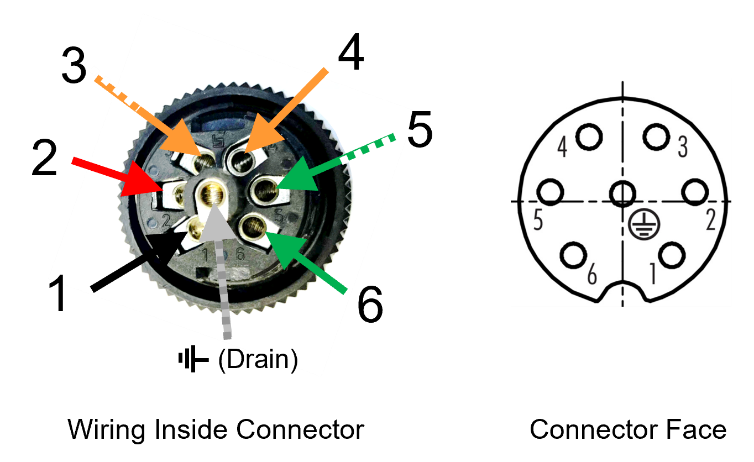

IZA800GVES User Guide
IZA800GVES VES All-in-one AI Camera System


Click to show the Table of Contents
- 1. Recommended Reading/Related Documents
- 2. Quick Installation Overview
- 3. Camera System Overview
- 4. Required/Optional Accessories (Not Included)
- 5. Planning Your Installation
- 6. Hardware Installation
- 7. Reserving IP Addresses in your Network
- 8. Recognizing Devices with IZ Discovery
- 9. Configuring a Camera
- 10. Calibrating the Cameras
- 11. Determining the IP Address of the RoadView Computer with IZ Discovery
- 12. Using RoadView
- 13. Troubleshooting and Maintenance
- 14. Appendix A - Document Change History
1. Recommended Reading/Related Documents
Click to show the Related Documents table
| Doc. No. | Title |
|---|---|
[IZA800GVES-TECH-001] |
IZA800GVES Quick Start Guide |
[IZA800GVES-REV-x-TDSHEET] |
IZA800GVES Technical Data Sheet |
Product-to-Mount Mapping |
|
Mounting Hardware documentation |
|
IZ Discovery Utility software components |
|
RoadView ALPR User Guide |
|
Software End User License Agreement (includes list of open source software) |
|
IZSVES Strobe Illuminator Series Technical Data Sheet |
|
IZSVES Strobe Illuminator Series User Guide |
|
IZPWR DIN Rail Mount Power Supplies Technical Data Sheet |
|
Composite Cable for VES (IZ_COMPOSITE_CABLE) |
|
Illuminator Cable for VES (IZCAB-SVES) |
|
Power/LAN Cable for VES (IZCAB-AVES) |
|
DIN Rail Mountable Connection Panel (IZPANEL) |
|
NDAA Section 889 Certification of Compliance |
2. Quick Installation Overview
-
Unpack the Camera System - see Section 3.1.
-
Gather any additional items needed - see Section 4.
-
Plan your physical installation - see Section 5.
-
Install the hardware (including cable construction) - see Section 6.
-
Reserve IP addresses for the components in your ALPR system - RoadView computer(s) and camera(s) - see Section 7.
-
Use IZ Discovery to find the initial IP Addresses of the cameras connected to your network - see Section 8.
-
Log into each camera, and change its IP address according to the requirements of your network. Use fixed addresses. Record these new addresses for use in RoadView configuration - see [s_Logging-In-to-the-Camera], and [s_Changing-a-Camera-s-IP-Address ].
-
Calibrate the cameras - see Section 10
-
Use IZ Discovery to find the IP address of the RoadView computer. Change the computer’s IP address according to the requirements of your network. See Section 11 and the RoadView ALPR User Guide (see Section 1).
-
Log in to RoadView, and configure RoadView, including adding the connected cameras - see Section 12 and the RoadView ALPR User Guide (see Section 1).
-
On the Live (Journal) tab, verify that Events are being generated for each vehicle passing each camera, and that the recognition has sufficient accuracy and confidence. See Section 12 and the RoadView ALPR User Guide (see Section 1).
3. Camera System Overview
3.1. Package Contents
Carefully unpack the contents of the VES Camera System package.
The package includes:
-
IZA800GVES, VES All-in-one AI Camera System
-
Power/LAN connector (field-mountable)
|
If any parts are missing or damaged, please contact INEX Technologies. |
3.2. Camera System Details and Dimensions
The IZA800GVES VES All-in-one AI Camera System is suitable for open road tolling, ITS and traffic enforcement applications, with different models available for different distances and illumination requirements. It has a rugged, all-weather, IP67-compliant, waterproof housing and a protective sunshade. The system consists of a black and white License Plate Recognition (LPR) camera, a color Overview (OV) camera, and an integrated, LED-based illumination system. A computer running license plate recognition software is also built in.
3.3. Multi-flash Technology
The Camera System’s illuminators project different light intensities in a sequence (also called multi-flash technology). This produces a series of video frames with varying degrees of illumination, which helps to determine the best possible recognition.

3.4. Built-in White LEDs (White LED Models)
Some of the built-in LEDs of some models of the IZA800GVES are white. They are used for overview image illumination.

3.5. Specifications
\{TBD: complex table}
| Item | Specification | |
|---|---|---|
Supported Analytics |
LPR Analytics |
Plate Recognition, State of Issue, Type |
Vehicle Analytics |
Vehicle Detection, Classification, Color, Make; |
|
Field of View (FOV) |
14 ft (H) x 10 ft (V) (4.3 x 3.0 m) |
|
Max Vehicle Speed |
Up to 120 mph (193 km/h) |
|
LPR Capture Distance* |
|
|
LPR Illumination |
Number of LEDs |
|
Wavelength |
|
|
Beam Angle |
|
|
LPR Camera |
Shutter Type |
Global |
Sensor |
Sony IMX265 |
|
Resolution |
3.19 MP - 2048 (H) x 1536 (V) |
|
Lens |
|
|
Video Compression |
MJPEG, H.264, H.265 |
|
Video Streaming |
RTSP Protocol |
|
OV Illumination |
Number of LEDs |
|
Wavelength |
|
|
Beam Angle |
|
|
OV Camera |
Shutter Type |
Global |
Sensor |
Sony IMX265 |
|
Resolution |
3.19 MP - 2048 (H) x 1536 (V) |
|
Lens |
|
|
Video Compression |
MJPEG, H.264, H.265 |
|
Video Streaming |
RTSP Protocol |
|
Supported Protocols (for additional protocols, see the RoadView documentation) |
INEX HTTP API |
LPR Events are reported to 3rd party systems via protocols such as the INEX HTTP API protocol. Each LPR Event includes metadata and associated images. |
INEX Discovery |
The INEX Discovery Protocol is used by the IZ Discovery utility to find all devices connected to the LAN. IZ Discovery also enables display and editing of each device’s network settings. |
|
AI Processor |
GPU |
NVIDIA Maxwell architecture with 128 CUDA® cores |
CPU |
Quad-core ARM Cortex-A57 MPCore processor |
|
RAM |
4 GB 64-bit LPDDR4, 1600MHz 25.6 GB/s |
|
System Storage |
MicroSD, 64 Gb |
|
Data Storage |
SSD, 250 Gb |
|
RTC Battery |
Maintains real-time clock date and time for 4-6 hours |
|
Rechargeable; Full charge-up time: 12 hours |
||
OS |
Linux Ubuntu 18.04 |
|
Environmental |
Ingress Protection |
IP67 |
Operating Temperature |
-22°F to 140°F (-30°C to 60°C) |
|
Storage Temperature |
-22°F to 158°F (-30°C to 70°C) |
|
Humidity |
0% - 90% RH, non-condensing |
|
Certifications |
EMC |
FCC Class B/CE |
Interoperability |
ONVIF compliant, Profile S |
|
RoHS |
RoHS |
|
Impact Protection |
IK10 (Vandal-proof) |
|
Eye Safety |
IEC62471 Group 1 |
|
NDAA |
NDAA Section 889 compliant |
|
Physical |
Dimensions |
(W x H x D) 6.7" x 4.7" x 17.7" |
Weight |
9.0 lbs (4.1 kg) |
|
Color |
White |
|
Interface |
Ethernet |
100BASE-TX, 2 pairs, Full Duplex |
Connectors |
|
|
Illuminator Configuration |
RS485: A+, B- |
|
Strobe Output |
OV Strobe: 5 V isolated |
|
Power |
Input Voltage |
24 VDC +/- 10%, Class 2 Low-Voltage |
Power Consumption |
25 W |
|
Accessories Included |
Sunshade |
|
Power/LAN Cable Connector: Waterproof outdoor Binder RD24, part no. 99 4218 70 07 |
||
Accessories Available |
||
-
LPR Capture Distance is measured from camera to plate
4. Required/Optional Accessories (Not Included)
4.1. Required Accessories
-
INEX IZ Composite Cable or INEX Power/LAN Cable for VES System; see Section 6.2.
-
0.1 in (2.5 mm) flat screwdriver for tightening the screw terminals of the Power/LAN connector (see Section 6.2) and 0.08 in (2 mm) flat screwdriver for tightening the screw terminal blocks of the IZPANEL.
-
Network (LAN) cabling (typically CAT 5e/6 cable) with metal-body RJ45 connectors. The total length of the cable should not exceed 328 feet (100 meters). See <<s_Connecting-the-Camera-System-Illuminator-Power-Supply-and-Network>> for important LAN cable information.
|
When using INEX cables (such as the IZ Composite Cable or the prefabricated Power/LAN Cable), for proper LAN connectivity from the camera via the IZPANEL (see Section 6.5.2) , the maximum cable length is 200 feet. |
-
Tools for building LAN cables (wire stripper, crimp tool, etc.) and RJ45 connectors with metal bodies.
|
All network cable extensions and repeaters must be shielded. |
-
You will need to provide a laptop computer to use for configuration. If you will be using the laptop outdoors, the screen must be able to be seen in strong sunlight. Required software:
-
Windows 10 or above - with .NET 4.5 enabled in "Windows Features"
-
Internet Explorer browser version 11 or higher
You can add an IE Tab extension to Chrome at this link (to enable access to the camera configuration application -see [s_Logging-In-to-the-Camera]).
-
-
The following accessories can be supplied by INEX/TECH:
| Item | Notes |
|---|---|
24VDC power supply (voltage-adjustable) |
INEX/TECH model power supply. |
Mounting Hardware (pan-tilt-roll bracket) |
Typically on gantry or wall/pole; see the Mounting Hardware documentation for details (see Section 1) |
4.2. Optional Accessories
-
External Illuminator - Can be used to enhance overview vehicle image quality, for front and/or rear capture.
-
Mount illuminators at an appropriate distance away from their associated Camera System(s), according to the objectiVES of your project. Contact INEX for guidance/training about this subject.
-
Position the illuminator so you can aim it at the place where vehicles pass for recognition - while minimizing the glare into drivers' eyes. In most cases, however, white illuminators are mounted to be aimed at the rear of vehicles. Illuminator aiming is most effective at night.
-
-
The illuminator is powered via a cable from the Camera System’s illuminator panel connector. Use an Illuminator Cable for VES System.
5. Planning Your Installation
5.1. Horizontal Field of View (Capture Line)
Your Camera System’s Field of View (FOV) is the area that the camera can "see". You can think of this area as an imaginary rectangle rising from the lane upwards. The width of this area is called the horizontal FOV or "capture line".
See Section 3.5 for the horizontal and vertical FOV specifications.

Select your Camera System’s position so that license plates are always within the capture line and parallel to it, with the Camera System facing as straight at the plates as possible - as shown in the following diagrams:
5.2. Angles and Distances
|
Installations that position the camera at significant angles in relation to the plates will reduce the line-of-sight distances specified. |

|
The maximum horizontal angle allowed is 30° (to the farthest point at the end of the capture line). If you must capture plates on a curve, place the Camera System on the side of the road that minimizes the horizontal angle. At larger angles, the reflectivity of the plates is reduced, resulting in images with less contrast. For plates whose characters are very shiny (for example, silvery), the weighted angle must be less than 20 degrees. The weighted angle is the angle between a line from the camera to the plate, and a line running straight ahead from the vehicle. |

|
The distance from the Camera System to the capture line must be within the viewing range of the LPR camera. Adjust the vertical angle so that the Camera System can read plates at all of their expected heights from the road. The maximum vertical angle allowed is 30°. Larger angles and/or greater mounting heights may be required in order to recognize plates on vehicles close to each other (such as in slow/congested traffic). At larger angles, the reflectivity of the plates is reduced, resulting in images with less contrast. For plates whose characters are very shiny (for example, silvery), the weighted angle must be less than 20 degrees. The weighted angle is the angle between a line from the camera to the plate, and a line running straight ahead from the vehicle. |
5.3. Position of the Sun in Relation to the Camera System
The Camera System should not be positioned so that the rays of the sun behind the Camera System shine along the camera-to-plate axis. Reflective plates will cause severe glare to be reflected back to the camera, obscuring the image of the plate’s characters.
Avoid/mitigate by:
-
Not installing the Camera System in an east/west direction
-
Installing the Camera System near a building that shields it from the sun’s rays
-
Installing the Camera System on a short pole
-
Using a double-Camera System installation (2 different angles or front/rear)

5.4. Optimizing Nighttime Vehicle Overview Images (using External Illuminators)

5.4.1. Matching Your Camera System to an INEX Illuminator
|
The wavelength of an external illuminator must be compatible with the wavelength of the internal illuminators of the INEX Camera System. See the appropriate Illuminator Series User Guide(s) for compatibility information (see Section 1). |
The INEX IZA800GVES Camera Systems are typically used with the IZSVES series strobe illuminators.
By using the following guidelines, you can match the illuminator you need to the INEX Camera System being used.
-
The IZSVES illuminators are synchronized with the IZA800GVES OV sensor. You can trigger from the OV camera by connecting the Camera System to the illuminator using appropriate cabling (see Section 6.1).
-
The number of illuminator LEDs and beam angle must match the distance type (long or short) of the Camera System being used, as follows:
-
Fewer LEDs and wider beam angles are used for short distances
-
More LEDs and narrower beam angles are used for longer distances
-
The results of applying these guidelines can be found in the appropriate Illuminator Series User Guide(s).
5.4.2. Illuminator Triggering and Pulse Width
You can trigger from the OV camera by using appropriate cabling (see Section 6.1). The pulse width and other parameters that affect illuminator operation are pre-configured according to your project’s requirements.
5.4.3. Illuminator Mounting and Aiming
See the illuminator guides for further details about installation and mounting considerations.
-
Mount illuminators at an appropriate distance away from their associated Camera System(s), according to the objectiVES of your project. Contact INEX for guidance/training about this subject.
-
Position the illuminator so you can aim it at the place where vehicles pass for recognition - while minimizing the glare into drivers' eyes. In most cases, however, white illuminators are mounted to be aimed at the rear of vehicles. Illuminator aiming is most effective at night.
5.5. Additional Installation Considerations
| Item | Considerations |
|---|---|
Surge Protection |
|
Correct, Stable and Sufficient Power |
|
Cable Extensions IMPORTANT All network cable extensions and repeaters must be shielded. |
|
Front/Rear Capture - or Both |
|
Objects with character-like appearances (interpreted as characters on a plate, resulting in false reads) |
Avoid having these items in the Field of View:
|
Obstructions (blocking FOV) |
|
Mounting |
|
6. Hardware Installation
6.1. Typical Wiring Diagrams
Here are typical wiring diagrams for capturing license plate images. Note that the type and configuration of the power supply may be different than the one you are using at your site. See Table 5 for a legend.
|
All network cable extensions and repeaters must be shielded. The Camera System is not compatible with some GigE switches; suggested switch type: 10/100 Mbps. After mounting, remove the protective film from the front window of the Camera System. |
| Item | Description | Ordering Information |
|---|---|---|
A |
LAN Cable |
Supplied by integrator |
B |
**Power/LAN Cable for VES System +
*or build yourself with IZ_COMPOSITE_CABLE and the Power/LAN Cable Connector included with the camera; |
INEX P/N: IZCAB-AVES |
C |
Power Supply: 24 VDC, 240 W, DIN rail mount |
INEX P/N: |
D |
Illuminator Cable for VES System |
INEX P/N: IZCAB-SVES |
E |
DIN Rail Mountable Connection Panel |
INEX P/N: IZPANEL |
F |
IZSVES Strobe Illuminator |
INEX P/N: See the IZSVES Strobe Illuminator User Guide for a table of Camera-to-Illuminator Typical Use Cases |
6.2. Power/LAN Cable Options
The IZ Composite or prefabricated Power/LAN cables are custom-made for VES camera applications.
-
If you have an IZ Composite Cable, you will need to connect one end to the connector plug supplied with the IZA800GVES camera (see [s_Connecting-the-IZ-Composite-Cable-to-the-Power-LAN-Connector-Plug]).
-
If you have a prefabricated Power/LAN cable, the connector plug is already attached to one end.
-
The other end of the cable consists of flying leads that will need to be connected to the IZPANEL terminal block connections (see Section 6.5.2)
6.3. Connecting the IZ Composite Cable to the Power/LAN Connector Plug
Refer to Figure 16 when following the instructions in this section.
|
Since you will need access to the power/LAN panel connector on the camera to perform this procedure, you should follow these instructions before mounting the camera. |
-
Measure the length of IZ Composite Cable you will need. Be sure to allow extra length for the parts of the cable that have to:
-
Pass through the connector
-
Go around bends
-
Reach far enough to reach terminals in a connection box, if applicable
-
|
The maximum cable length for proper LAN connectivity via an IZPANEL is 200 feet (61 m) At the end of this procedure, you will need to check that there is conductivity from the drain (shield) wire (at the power supply end of the cable) to the drain wire connected to the connector plug. |
-
Unscrew and separate all of the Power/LAN connector plug parts, including the "female insert" part that exposes the screw terminals inside the plug (see Figure 16). If the parts are connected together, you can separate the insert as follows:
-
Attach the connector plug to a male panel connector (either on the Camera System, or an IZSVES illuminator). Be sure the notch on the plug lines up with the protrusion on the panel connector.
-
Tighten the outer insert ring onto the panel connector to fix it in place.
-
Unscrew the outer sleeve ring from the hood.
-
Match the bevels inside the hood to the bevels of the sleeve.
-
Loosen the sleeve with a series of partial turns (so the wires won’t get twisted inside the hood):
-
Small turn
-
Remove hood from sleeve
-
Rotate hood back to original position
-
Replace hood on sleeve
-
Make another small turn
-
-
When the sleeve is loose enough, you can loosen it the rest of the way by rotating the sleeve’s bevels.
-
Release the outer insert ring and remove the plug from the connector
-
-
Thread the cable through the pressing screw, pinch ring, and "seal" ring.
-
Thread the cable into the bottom of the hood and out though the top of the hood. Continue threading the cable through the sleeve.
-
If needed, turn the inner part of the insert to the desired position. This is typically done with the notch towards the "bottom" (in the same direction as the bottom of the hood). This typical position will enable the cables to leave the connector plug directly towards the back of the Camera System.
-
Strip off the outer rubber insulation of the cable, leaving the individual insulated wires at a length of 0.8-1.0 in (20-25 mm). There should be enough length in the wires to enable turning the hood to a different position (see Figure 21). Be careful not to cut into the shield mesh surrounding the inside of the cable, the drain wire strands, and the plastic jackets (casings) surrounding the individual insulated wires.
-
Pull the shield mesh and plastic jacket back along the cable to expose the drain wire. The drain wire is the same color as the shield mesh, and is composed of several strands wound together (see Figure 20).
-
Carefully cut away a small amount of the jackets enclosing pairs of the individual insulated wires. Separate the wires.
-
Strip off 0.2 in (5 mm) from each insulated wire (lead).
-
Insert each flying lead (stripped wires and drain wire) into the appropriate screw terminal, and tighten the terminal’s screw with a 0.1 in (2.5 mm) flat screwdriver. The wire colors and pinouts are shown in the following Figure (see [f_Building-the-Power-LAN-Cable-with-IZ-COMPOSITE-CABLE]). You can see small pin numbers near each screw terminal (see Figure 21).
|
The screw terminal for the drain wire is in the middle of the insert, with the screw threaded up from the bottom (see Figure 22). All wire colors are those used in the IZ_COMPOSITE_CABLE and IZCAB-AVES cables. |
\{TBD: complex double table with picture and table}
|  | [width="100%",cols="21%,39%,40%",options="header",] !=== !Pin !Signal !Wire Color !1 !GND !Black !2 !+V (24 VDC) !Red !3 !LAN TX (+) !White/Orange !4 !LAN TX (-) !Orange !5 !LAN RX (+) !White/Green !6 !LAN RX (-) !Green ! !Drain !Silver !=== [#f_Building-the-Power-LAN-Cable-with-IZ-COMPOSITE-CABLE] .Building the Power/LAN Cable with IZ_COMPOSITE_CABLE |
|---|
-
Verify that there is conductivity from the drain wire (at the end of the cable with the flying leads) to the drain pin on the connector plug.
-
Attach the connector plug to a male panel connector (either on the Camera System, or an IZSVES illuminator). Be sure the notch on the plug lines up with the protrusion on the panel connector.
-
Tighten the outer insert ring onto the panel connector to fix it in place.
-
Hold the sleeve bevels and being to tighten the sleeve onto the insert
-
When you can no longer tighten the sleeve with your fingers, continue a small additional tightening using the bevels to make partial turns, as described in the following steps (so the wires won’t get twisted inside the hood):
|
Be sure to tighten the sleeve just enough to feel a little resistance. This will enable the connector plug to be rotated more once it is connected to the camera (see Figure 19). |
-
Match the bevels inside the hood to the bevels of the sleeve.
-
Make a small turn
-
Remove the hood from the sleeve
-
Rotate the hood back to its original position
-
Replace the hood on the sleeve
-
Make another small turn
-
Once you have finished tightening the sleeve, turn the hood to the desired angle which for which you want the cable to leave the camera (see Figure 19).
-
Slide the hood along the cable towards the terminal connections by pulling the cable out the bottom of the hood. Leave a small amount space between the hood and the sleeve - this will enable you to loosen/adjust the sleeve in the future (by moving the hood away to make partial turns).
-
The sleeve ring’s threads (inside the ring facing the bevels) attach the sleeve to the hood’s threads; use the sleeve’s ring to tighten the attachment.
-
Slide the seal, pinch ring and pressing screw nut along the cable. Push the seal all the way up into the hood.
-
-
Slide the pinch ring into the bottom of the hood.
-
Tighten the pressing screw to push the other parts up into the hood. Maximum recommended torque is 10.2 kgf.cm / 1.0 N.m. up to 12.7 kgf.cm / 1.25 N.m.
6.4. Mounting the Camera System
Secure the Camera System to the appropriate mounting hardware (see the Mounting Hardware documentation - see Section 1).
6.5. Connecting the Camera System, Illuminator, Power Supply and Network
6.5.1. Preparing the Cable Leads (IZ_COMPOSITE_CABLE)
If you have built the Power/LAN Cable using the IZ_COMPOSITE_CABLE, follow these instructions:
|
To attach the cables to the camera, tighten the outer insert ring onto the corresponding panel connector (see Figure 16). After connecting the cables to the camera, you can still rotate them slightly to achieve the desired angle (see Figure 19). If you need a bigger rotation, see [s_Connecting-the-IZ-Composite-Cable-to-the-Power-LAN-Connector-Plug]on page 24. For a wiring diagram, see Section 6.1. |
-
From the end of the Power/LAN cable to be connected to the power supply and LAN, strip off the outer rubber insulation of the cable, leaving the individual insulated wires at an appropriate length for connection to the IZPANEL (see Section 6.5.2). Be careful not to cut into the shield mesh surrounding the inside of the cable, the drain wire strands, and the plastic jackets (casings) surrounding the individual insulated wires.
-
Pull the shield mesh and plastic jacket back along the cable to expose the drain wire. The drain wire is the same color as the shield mesh, and is composed of several strands wound together (see Figure 20).
-
Carefully cut away an appropriate amount from the jackets enclosing pairs of the individual insulated wires. Separate the wires.
-
Strip off 0.2 in (5 mm) from each insulated wire (lead).
|
Power undervoltage, overvoltage and/or incorrect polarity will damage the unit and will void the warranty. Stable power at the correct level must be supplied to the Camera System, even when under a heavy processing load. Turn off/disconnect the external (AC) power supply before connecting cables. If you are using an INEX power supply, see its User Guide (see <<s_Related-Documents>>) for important information. All network cable extensions and repeaters must be shielded. |
6.5.2. Connecting the IZ Panel
The IZPANEL is used in connection cabinets. It provides a convenient way to connect the Power/LAN cable from the IZA800GVES camera to the LAN and power supply (see the IZPANEL documentation referred to in Section 1).
|
When using INEX cables (such as the IZ Composite Cable) for LAN connectivity from the camera via the IZPANEL, the maximum cable length is 200 ft (61 m). |
The screw terminal blocks of the IZPANEL are plugs. They can be removed for more convenient access when attaching flying leads (wires). Use a 0.08 in (2 mm) flat screwdriver to tighten the terminal screws.
-
Power -With the power supply OFF:
-
Connect the power supply’s (V+), GND and drain terminals to the appropriate connections on the IZPANEL’s smaller terminal block.
-
Connect the camera Power/LAN cable’s flying leads (wires) red (+), black (-) and drain flying leads (wires) to the IZPANEL’s larger terminal block.
-
-
LAN
-
Connect the LAN TX +/- and RX +/- leads to the appropriate connections on the IZPANEL’s larger terminal block.
-
Connect your network switch to the RJ45 connector on the IZPANEL.
-
6.6. Connecting the AC Electricity
Connect a plug to the Live, Neutral and Ground terminals of the power supply (see Figure 14).
Plug the power supply into the AC electricity. If required, switch the power supply unit ON.
|
If any power cables were lengthened, ensure that all components receive exactly their rated voltage (see Section 3.5). Power undervoltage, overvoltage and/or incorrect polarity will damage the unit and will void the warranty. |
7. Reserving IP Addresses in your Network
The INEX cameras have been pre-configured with default IP addresses. You will probably need to change these addresses to conform to the requirements of your network. Be sure that you have IP addresses reserved for all components of your ALPR system (RoadView computer and cameras).
8. Recognizing Devices with IZ Discovery
8.1. Installing and Using IZ Discovery
The IZ Discovery utility discovers all active devices connected to the network, and displays a list of their network parameters. These devices can include cameras and computers.
|
If any device on your network is connected via wireless, IZ Discovery will not recognize the device. In addition, if the computer running IZ Discovery is connected via wireless, you will not see any devices displayed. |
-
Download the IZ Discovery software components (see Section 1)
-
Run IZ Discovery
-
When IZ Discovery first runs, you may see a Windows security warning. If so, click Run.
-
If you see a message related to the Windows firewall, click Allow.
-
IZ Discovery will start and display a list of devices on the network, according to their serial numbers (see Figure 24).
-
Scroll down to find the device you are interested in. You can double-click to view/edit a specific device’s IP address parameters (see Section 8.2).
-
Click Clear List to refresh the discovery process.
-

-
If IZ Discovery does not recognize a device:
-
Press the device’s reset button (if available)
-
Reset the device by shutting off power/removing the LAN cable, waiting 5 seconds, and reapplying power
-
Check the LAN cable connected between your laptop and the network, and the LAN cable connected between the device and the LAN switch. Replace the cable(s) and try to run IZ Discovery again.
-
8.2. Changing a Device’s IP Address and Network Settings

|
The device’s IP Address cannot be set to 10.10.2.xx or 10.10.3.xx It is highly recommended to use a fixed IP address (not DHCP). A fixed IP address enables you to access a device using the same URL every time, even after unexpected power outages (see [s_Logging-In-to-the-Camera]38). A dynamic IP address may change upon device reboot. Before opening the device’s web interface, you will have to find the current IP address of the device using IZ Discovery. If you want to copy the IP address (for login to the device) you will need to uncheck the DHCP checkbox momentarily to make the address field accessible. Be sure to define IP addresses for each camera in the Camera System, plus the IP address of the onboard computer. It is recommended to use sequential IP addresses; for example: 192.168.5.64, 65, 66 You can also log in to each camera’s configuration application to change its IP address (see Section 9). |
To change the device’s mode (fixed or dynamic [DHCP]), or IP address:
-
Select the relevant line in the list of devices and double-click on it.
-
The Network Settings window appears
-
To change the mode:
-
Check or uncheck the DHCP box
-
Click Save
-
-
To change the IP address:
-
Verify that the address is not used by any other device on the network
-
Be sure to uncheck the DHCP box
-
Enter the network address parameters
-
Write down the new IP Address and click Save
-
-
The change should be reflected in the main dialog. This can take about a minute until the IP is obtained. If you do not see the change after this time, close IZ Discovery, and then reopen it.
-
Verify that the IP address parameters have been changed to the ones you wanted. If not, you will have to log into the device (see [s_Logging-In-to-the-Camera]), and change the IP address (see Section 9.2)
9. Configuring a Camera
9.1. Logging In to the Camera
-
Select the function you need from the links at the upper right:
-
Click the Live View link to see what the camera is currently viewing. You can also use controls such as zoom and focus (see Section 10.2).
-
|
When using Live View for the first time, you may be prompted to download and install an ActiveX control (Smart Viewer). The stream of the Live View can also be accessed using an RTSP URL with the following format: rtsp://[username:password]@<Camera IP address>/cam0_0 To see the stream, use a video player such as the VLC player, located at: |
-
If you need to change the IP address of the camera or other configuration parameters, click the Admin link.
-
When prompted for a login, use the Administrator credentials of root, IZpass12.
-
|
The Administrator user name (root) cannot be changed, and the Administrator password is encrypted. Therefore, if someone changes the Administrator password, there is no way to find out the password if it gets lost. |
9.2. Changing a Camera’s IP Address
|
It is highly recommended to use a fixed IP address (not DHCP). A fixed IP address enables you to access the computer using the same URL every time, even after unexpected power outages. |
-
In the Basic Setup group, click on IP Address:

-
To change the IP address to a fixed one:
|
The IP address must be unique within the entire ALPR system, and must be within the limits of standard IPv4 address numbering. |
-
Click the Static radio button.
-
Enter the network address parameters (see Table 6). All cameras must be on the same subnet as both the computer you will use to communicate with and configure the camera, and the INEX RoadView computer.
|
It is highly recommended to record the camera’s IP address and port number in a safe place. You will need them if the camera’s parameters are reset back to their defaults, and for configuring INEX ALPR software. |
| Sub-category > Parameter Group | Parameter | Setting |
|---|---|---|
IP Address |
Service (radio buttons) |
Set to Static to be able to access the camera |
IP Address |
IP Address |
According to the camera’s location and the organization of your network. |
IP Address |
NetMask |
According to the camera’s location and the organization of your network |
IP Address |
GateWay |
According to the camera’s location and the organization of your network |
IP Address |
DNS 1 |
According to the camera’s location and the organization of your network |
IP Address |
DNS 2 |
According to the camera’s location and the organization of your network |
-
Click Apply.
|
After selecting Apply, you will be requested to close your web browser so the updates can take effect. This will take 20 seconds or more, to allow the camera time to reboot. |
-
In the IZ Discovery utility (see Section 8), click the "Clear List" button, and verify that the camera can be recognized with the new IP address.
10. Calibrating the Cameras
There are two cameras in the Camera System. Both are calibrated in nearly the same way. The LPR camera is set to capture in black and white, and the Overview (OV) camera is set to capture in color.
The OV camera can be used both to display an overview image, and to perform LPR recognition. You may even be able to improve read accuracy by changing the zoom to have one camera "see" closer than the other one.
10.1. Preparing a Vehicle/License Plate
Move a vehicle next to, and at the middle of the capture line. (This is the position at which the vehicle sensor signals that the vehicle is present.) Ensure that the Camera System is aimed at the middle of the lane, and is at the required capture distance (see Section 3.5 and Section 5).
Alternatively, in a lab, position a license plate at the expected distance and height.
10.2. Calibrating the Cameras Using RoadView
See the RoadView ALPR User Guide for calibration instructions (see Section 1).
11. Determining the IP Address of the RoadView Computer with IZ Discovery
See Section 8.
12. Using RoadView
12.1. Logging In
-
Open a browser (latest version of Chrome or IE 11 or higher). Type in the IP address of the RoadView computer. For example:
http://192.115.120.76/ -
You will see the login screen. Enter the default username and password (root, root):
-
You should see the RoadView Live (Journal) tab. See the RoadView ALPR User Guide for instructions for configuring and using RoadView (see Section 1).
12.2. Verifying the Installation
-
Using a license plate mounted in a lab, or by driving a vehicle through the lane, verify that an Event is generated with the correct plate read (recorded in the RoadView Live (Journal) tab - see the RoadView ALPR User Guide). See Section 1.
-
Once the lane is active, verify that Events are being generated for each vehicle passing each camera, and that the recognition has sufficient accuracy and confidence.
12.3. Logging Out
See the RoadView ALPR User Guide (see Section 1) for logout instructions, using the multi-line dropdown menu icon in the upper right corner of the screen.
13. Troubleshooting and Maintenance
13.1. Troubleshooting
See the RoadView ALPR User Guide (see Section 1).
13.2. Checking Mounting Screws
It is recommended to check all mounting screws for proper tightness once every two years.
13.3. Cleaning the Camera System
Do not use solvents or strong abrasive detergent when cleaning the Camera System. Use a soft dry cloth to clean the ALPR Camera System’s front glass when it is dirty. If the dirt has hardened, remove it using mild soap and water, and then wipe the front window gently.
14. Appendix A - Document Change History
| Version | Date | Change |
|---|---|---|
1.00 |
June 29, 2022 |
Initial version |
1.10 |
Aug. 30, 2022 |
|
1.20 |
Sep. 12, 2022 |
|
1.25 |
Sep. 28, 2022 |
|
1.26 |
Nov. 30, 2022 |
|
1.27 |
Dec. 2, 2022 |
|
1.28 |
Dec. 4, 2022 |
|
1.29 |
Dec. 5, 2022 |
|
1.30 |
Jan. 11, 2023 |
|
1.31 |
Mar. 20, 2023 |
|
1.32 |
Mar. 20, 2023 |
|
1.33 |
Mar. 20, 2023 |
|
1.34 |
Mar. 23, 2023 |
|
1.35 |
May 8, 2023 |
|
1.36 |
Aug. 13, 2023 |
|
1.70 |
Aug. 21, 2023 |
|
|